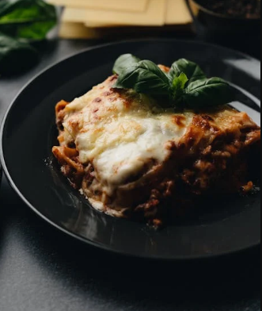

Microwave Lasagna for 2

Image from Pexels.
Home-cooked. Cheap. Easy. Quick.
Ingredients
- 90 g uncooked lasagna noodles (about 3 sheets)
- 300 ml marinara or pasta sauce (1 1/4 cup)
- 120 g cooked ground beef or veggies (1/2 cup)
- 240 g quickmelt processed cheese (1 cup)
- 3 g garlic powder (1/2 teaspoon)
- 3 g dried basil or oregano (1/2 teaspoon)
- salt and pepper to taste
- 6 ml canola oil (1 teaspoon)
Prep Instructions
- Boil the noodles for 3-4 minutes until slightly softened but still firm. Drain and set aside.
- Sauté ground beef or veggies with olive oil, garlic powder, salt, pepper, and herbs until cooked through.
Assembly
- Spoon a thin layer (~3 tsbp) of sauce on the bottom of a microwave-safe dish(~6x6 inches).
- Place parboiled noodle sheets.
- Spread half the cooked meat/veggies (~60 g).
- Dollop 120 g of cheese evenly.
- Add some sauce (~3 tbsp).
- Repeat for the second layer.
- For the third layer, place noodles, top with remaining sauce and cheese.
Microwave Cooking
Cooking Time ~30 minutes
- Cover loosely with a microwave-safe lid or plastic wrap (poke a few holes for steam).
- Microwave at 70-80% power for a total of 12-15 minutes.
- Check after 10 minutes, rotate the dish if needed to ensure even cooking.
- After microwaving, let it rest covered for 5-10 minutes to let the lasagna set and finish cooking gently.
Tips
- Mix garlic powder and dried herbs into cheese.
- Drizzle canola oil on top before cooking to help slight browning.
- Add fresh herbs or chili flakes before serving for extra punch.